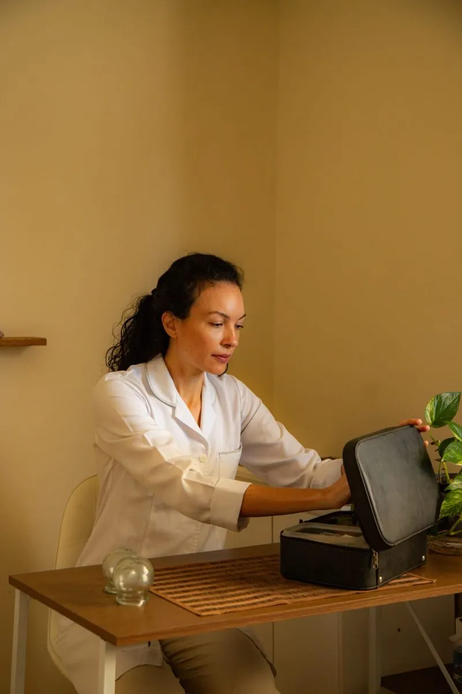
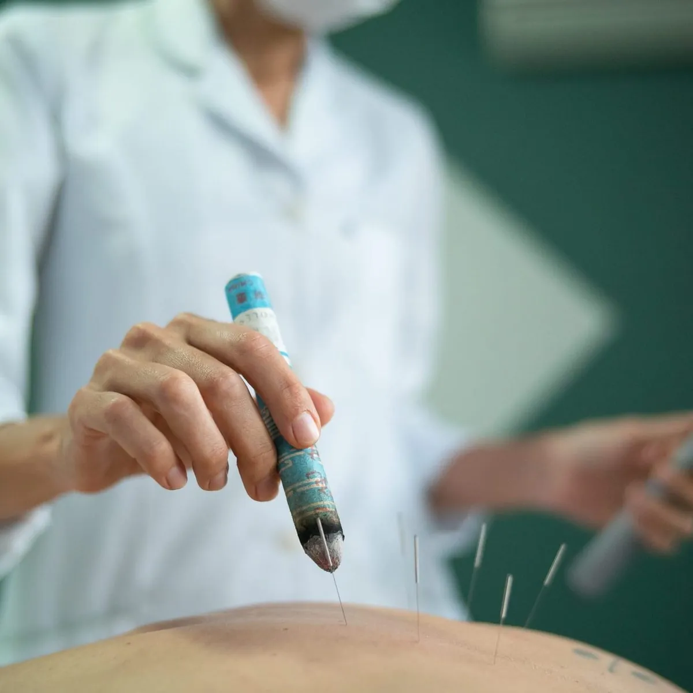
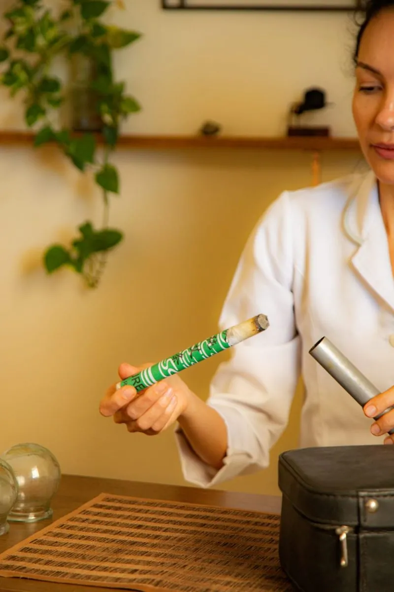
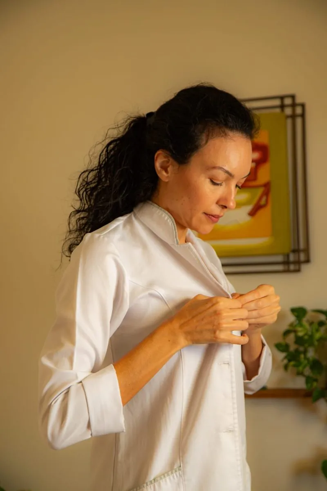
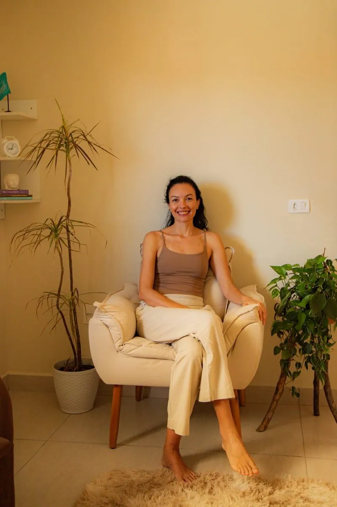
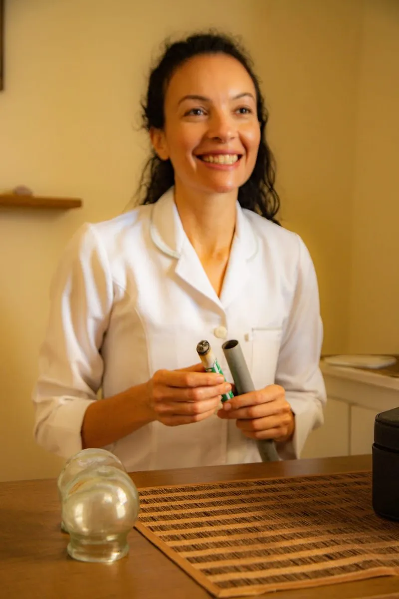
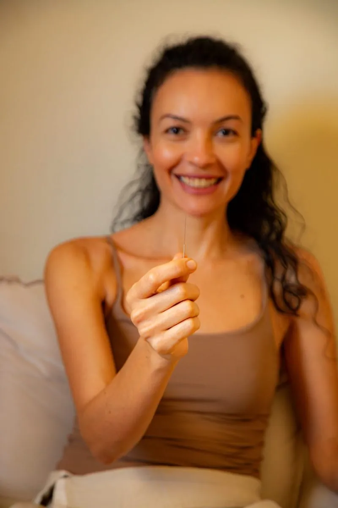

01
Acupuntura
Por meio da estimulação de pontos específicos do corpo, a acupuntura busca modular respostas fisiológicas e favorecer o equilíbrio. A escolha dos pontos e a condução são definidas de forma individualizada.
Escutar o corpo.
Cultivar equilíbrio.
Um olhar individualizado sobre a saúde, inspirado na Medicina Chinesa e na filosofia taoísta. Atendimento de acupuntura e naturologia no Campeche, para acompanhar seus ritmos, fortalecer a vitalidade e viver com mais presença.
ACUPUNTURA · MEDICINA CHINESA · NATUROLOGIA · FLORIANÓPOLIS/SC
Cuidado que considera a pessoa por inteiro.
A acupuntura e as práticas da Medicina Chinesa fazem parte de uma abordagem integrativa que considera o corpo, a mente, as emoções e a relação com o ambiente. Por meio de recursos terapêuticos tradicionais, o cuidado busca favorecer a autorregulação, aliviar desconfortos e apoiar o equilíbrio das funções do organismo.
O propósito é olhar para além da queixa imediata: compreender o que seu corpo comunica e construir, em conjunto, caminhos possíveis para uma vida com mais bem-estar, disposição e vitalidade.
A Medicina Chinesa reúne diferentes recursos e orientações que podem ser integrados de acordo com cada pessoa, seu momento de vida e suas necessidades.
Por meio da estimulação de pontos específicos do corpo, a acupuntura busca modular respostas fisiológicas e favorecer o equilíbrio. A escolha dos pontos e a condução são definidas de forma individualizada.
A alimentação, o sono, o movimento e a rotina fazem parte do cuidado. A dietoterapia chinesa considera as características dos alimentos e sua relação com as necessidades de cada pessoa, oferecendo orientações possíveis para o dia a dia.
Não existe uma única fórmula para todos. A escuta, a observação e a compreensão do contexto orientam um plano de cuidado coerente com sua constituição, suas queixas e sua fase de vida.
Além das agulhas, a Medicina Chinesa conta com técnicas complementares, como o calor da moxabustão e a ventosaterapia. Cada recurso é escolhido conforme a avaliação e o momento de cada pessoa.



Na Medicina Chinesa, compreender o indivíduo é parte essencial do cuidado. A proposta terapêutica é construída a partir de uma avaliação ampla e pode ser ajustada conforme a evolução e as respostas de cada pessoa.

Conhecer sua história, suas queixas, seus hábitos e o que deseja cuidar.
Observar padrões e necessidades dentro da perspectiva da Medicina Chinesa.
Definir os recursos terapêuticos e orientações adequados ao seu contexto.
Reavaliar as respostas e adaptar o cuidado ao longo do processo.

A Medicina Chinesa é uma tradição milenar que desenvolveu uma compreensão abrangente do ser humano. Em diálogo com a filosofia taoísta, parte da ideia de que fazemos parte da natureza e estamos continuamente em relação com seus movimentos e transformações.
Assim como as estações se sucedem, nosso corpo também responde a ciclos: alterna momentos de atividade e repouso, adaptação e recolhimento. Sono, alimentação, emoções, clima e rotina participam dessa dinâmica.
Esse olhar amplia a compreensão do cuidado. Em vez de considerar apenas manifestações isoladas, procura reconhecer relações, padrões e necessidades. A partir disso, propõe práticas e escolhas cotidianas mais coerentes com cada pessoa e com seu momento de vida.
Cultivar essa relação com os próprios ritmos pode apoiar uma vida mais equilibrada, consciente e vibrante — não como promessa de longevidade, mas como um caminho contínuo de atenção e cuidado.

Monique Miranda é naturóloga e acupunturista. Seu trabalho é fundamentado na Medicina Chinesa e inspirado pela filosofia taoísta, com uma abordagem que considera a singularidade de cada pessoa e a relação entre corpo, hábitos e ambiente.
Atende em consultório próprio no Campeche, no Sul da Ilha de Florianópolis (SC). Em cada atendimento, busca oferecer um espaço de escuta e acolhimento, no qual a compreensão do momento de vida orienta a escolha dos recursos terapêuticos e das práticas de cuidado.
O cuidado não é uma receita pronta: é um caminho construído em conjunto.
Trechos de avaliações publicadas no perfil do Google.
Monique é uma grande profissional e o espaço acolhedor tudo perfeito.
Cada sessão trouxe alívio, equilíbrio e melhorias reais na minha saúde.
Parabéns pelo seu trabalho e dedicação!
Algumas informações para conhecer melhor a proposta de atendimento.

É uma prática terapêutica originária da Medicina Chinesa que utiliza a inserção de agulhas muito finas em pontos específicos do corpo. A aplicação é definida conforme a avaliação e os objetivos de cuidado de cada pessoa.
Não. Sua abordagem tradicional procura compreender a pessoa de forma integrada, observando sinais, hábitos, emoções, alimentação, sono e contexto de vida para orientar o cuidado.
São recursos tradicionais da Medicina Chinesa. A moxabustão utiliza o calor da artemísia sobre pontos específicos do corpo; a ventosaterapia usa copos que criam uma leve sucção sobre a pele. Seu uso é definido de acordo com a avaliação individual.
É uma abordagem tradicional da alimentação que considera características dos alimentos e sua relação com as necessidades individuais. As orientações são pensadas para o contexto e a rotina de cada pessoa.
Não necessariamente. O atendimento também pode ser procurado por quem deseja cuidar dos hábitos, buscar mais equilíbrio e desenvolver uma relação mais atenta com a própria saúde.
O consultório fica na Rua Laura Duarte Prazeres, 952, no Campeche, em Florianópolis (SC). O atendimento é de segunda a sexta, das 8h às 20h, com horário agendado.
Entre em contato pelo WhatsApp (48) 99915-6596 para conversar sobre o atendimento, esclarecer dúvidas e consultar horários disponíveis.
Entre em contato para conhecer o atendimento e encontrar um horário. O primeiro passo é uma conversa.
Falar com Monique pelo WhatsApp ↗Segunda a sexta, das 8h às 20h
Atendimento com horário agendado
Rua Laura Duarte Prazeres, 952
Campeche · Florianópolis, SC · 88065-175